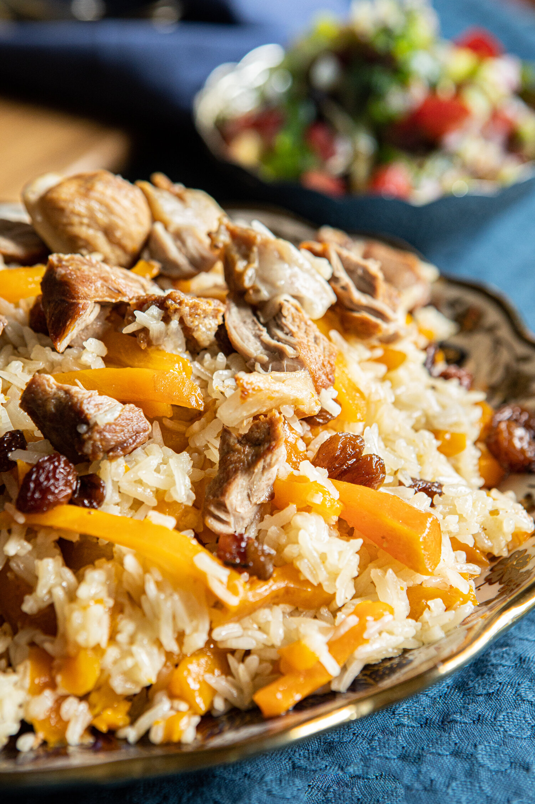

Uyghur Lamb Pilaf

Description
Lamb pilaf is one of the main staple traditional dishes of the
Uyghur people in China. It's typically eaten with families,
friends, and neighbors in a communal setting, but you may also
find it served in many restaurants in single servings as well.
It is made with very few ingredients and in very simple steps.
It's rich flavor comes from the perfect combination of it's
ingredients.
Ingredients
- lamb of choice 1 lb
- onion 1 large
- carrot 2 large
- white rice 1.5 cup
- avocado oil 50ml
- water
- salt 10g
- cumin 10g
Steps
- Rinse the rice several times and let it soak for 30mins.
- Cut the lamb into chunks. Slice the onion and carrot into
slices of about 0.8cm wide.
- (Optional) If lamb has a very strong odor or you just
don't like the smell of lamb, put it into a pot with water
and bring to boil. Once boiled, add in some coriander,
sichuan peppercorn, and cooking wine. Let it boil for a few
more minutes. Take the lamb out and rinse it under hot water.
- Add oil to a deep pan. When it reaches high heat, add onion
to the pan and cook until it becomes transparent. Then add meat
to the pan and cook until it's color slightly browns. Then take
out the onion and meat.
- Add carrots to the pan and cook until it becomes soft.
- Add the onion and meat back into the pan. Add salt and cumin
and cook for a few minutes. Then add water to cover the
ingredients and bring to a boil with cover on.
- Once boiled, lower it to a simmer. Add in the soaked rice
and lay it evenly on top of the other ingredients. (Optional:
Add in as much raisin as you'd like at this point.) Make a
few holes in the layer of rice. Let it simmer on low for 35
minutes. Check occasionally to make sure it doesn't dry out and
burn.
- Open the lid and make sure water from the lid doesn't drip
back onto the rice. Stir and mix all the ingredients from the
bottom of pan.
- Serve.
Link to original
recipe